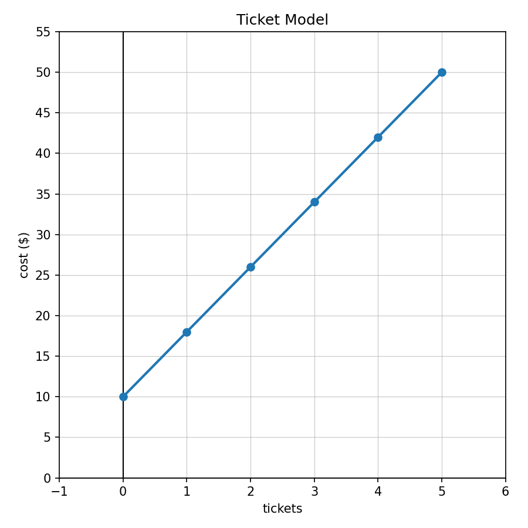
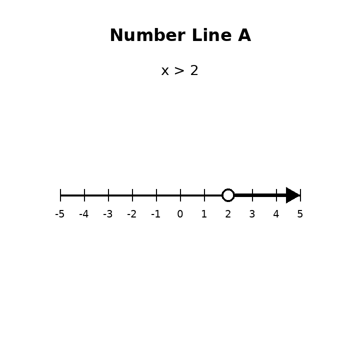
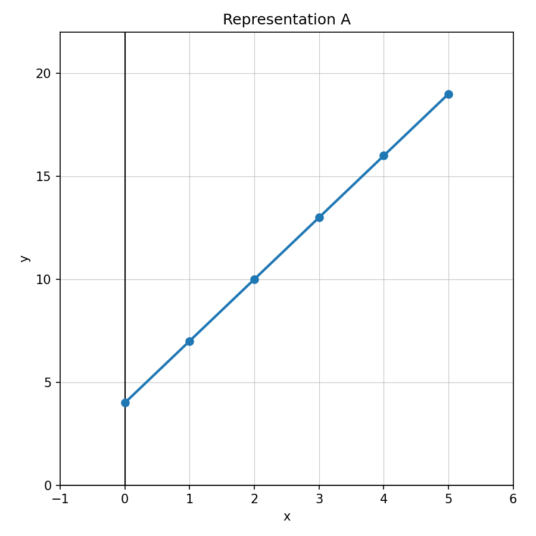

A gym charges $25$ dollars to join and $10$ dollars each month. Which expression models the total cost for $m$ months?
For the model $8t+12=52$, determine whether $t=5$ is a solution. Explain what $t$ could represent.
A taxi charges a $4$ dollar pickup fee plus $3$ dollars per mile. Write and solve an equation to find the number of miles for a $25$ dollar ride.
Use the Ticket Model graph. Write an equation for cost $C$ in terms of tickets $t$ and identify the starting cost.

Solve: $$x+6>14$$
Solve: $$x-9\le 4$$
Determine whether $3$ is a solution to $x<5$.
Use Number Line A. Write the inequality represented by the graph.

Solve and graph the solution on a number line: $$2x\ge 12$$
A student can spend at most $48$ dollars. Each ticket costs $6$ dollars. Write and solve an inequality for the number of tickets the student can buy.
Compare the solution sets $x<4$ and $x\le 4$. Explain how the graphs are alike and different.
Create a real-world situation that could be represented by $5x+10\le 60$. Solve it and explain what values make sense in the context.
Does the equation $y=3x+4$ match the table?
| $x$ | 0 | 1 | 2 | 3 |
|---|---|---|---|---|
| $y$ | 4 | 7 | 10 | 13 |
A graph crosses the $y$-axis at $6$. What is the starting value?
Use Representation A. Identify the starting value and rate of change.

For finding the output when $x=50$, which is most efficient: a table, graph, equation, or verbal description? Explain briefly.